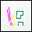
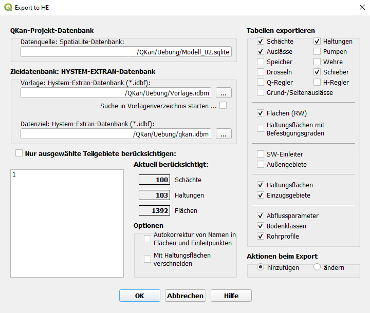
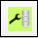

Formulare
Berechnung von Oberflächenabflussparametern
Mit der Funktion  Oberflächenabflussparameter eintragen werden die
Oberflächenabflussparameter für befestigte und unbefestigte Flächen berechnet. Diese Funktion ist vorrangig für das Simulationsprogramm
HYSTEM-EXTRAN gedacht. In HYSTEM-EXTRAN ist ein Assistent zur Berechnung der Oberflächenabflussparameter vorhanden,
der diese Werte ebenfalls berechnen kann und dessen Anwendung empfohlen wird.
Oberflächenabflussparameter eintragen werden die
Oberflächenabflussparameter für befestigte und unbefestigte Flächen berechnet. Diese Funktion ist vorrangig für das Simulationsprogramm
HYSTEM-EXTRAN gedacht. In HYSTEM-EXTRAN ist ein Assistent zur Berechnung der Oberflächenabflussparameter vorhanden,
der diese Werte ebenfalls berechnen kann und dessen Anwendung empfohlen wird.
Mit Hilfe der Auswahltabelle kann die Bearbeitung auf Haltungen mit ausgewählten Entwässerungsarten sowie allgemein auf ausgewählte Teilgebiete beschränkt werden.

Verknüpfungslinien von Flächen zu Haltungen erstellen
Mit der Funktion  Erzeuge Verknüpfungslinien von Flächen zu Haltungen wird für jede Fläche, für die noch keine Anbindung erstellt wurde (automatisch oder manuell), eine Linie erzeugt, die innerhalb der Fläche beginnt und auf der damit verknüpften Haltung endet.
{kind=link}
Abhängig von dem Flächenattribut „aufteilen“ ist eine Anbindung pro Fläche oder pro Flächenteilstück und Haltungsfläche (Tabelle „tezg“) vorgesehen.

Filteroptionen
Mit dieser Auswahl kann die Bearbeitung auf Flächen mit den ausgewählten Abflussparametern beschränkt werden
Hier können die zu berücksichtigenden Haltungen anhand der Entwässerungsarten ausgewählt werden. Hier sollten Schmutzwasser und andere Abwasserarten, die kein Regenwasser enthalten, ausgeschlossen werden
Sind Teilgebiete erstellt worden und es soll in diesen gearbeitet werden, kann dies über die Auswahl in diesem Kasten geschehen
Optionen zur Erzeugung von Zuordnungen
Abstand zur nächsten Kante: Die nächste Haltung wird anhand des geringsten Abstandes zur nächsten Kante einer Fläche bestimmt - im Regelfall sollte diese Option gewählt werden
Abstand zum Mittelpunkt: Die nächste Haltung wird anhand des geringsten Abstandes zum Mittelpunkt einer Fläche bestimmt
Suchradius: Maximaler Abstand zur Haltung, innnerhalb dessen die Flächen berücksichtigt werden. Der Wert sollte ausreichend groß gewählt werden. Ein zu großer Suchradius verlangsamt jedoch den Suchvorgang unnötig, weshalb Werte bis 100 m empfohlen werden
Fangradius: Der maximal zulässige Abstand zwischen dem Ende der Verbindungslinie und der zu verknüpfenden Haltung
Verbindungen nur innerhalb Haltungsfläche (tezg) erstellen: Nur in besonderen Fällen zu empfehlen, in denen die Haltungen nur mit den Flächen verknüpft werden sollen, die innerhalb der selben Haltungsfläche liegen
Autokorrektur von Namen in Flächen und Einleitpunkten: Diese Option bewirkt, dass vor Erstellung der Zuordnungen zunächst nicht eindeutige Bezeichnungen von Flächen und Einleitpunkten automatisch so durch eine fortlaufende Nummer ergänzt werden, dass nur noch eindeutige Bezeichnungen vorkommen. Ist diese Option nicht aktiviert, bricht die Erstellung der Zuordnungen bei nicht eindeutigen Bezeichnungen mit einer Fehlermeldung ab
Mit Haltungsflächen verschneiden: Diese Option muss aktiviert werden, wenn Flächen, für die die Option „Aufteilen“ festgelegt wurde, beim Export in ein Simulationsprogramm auf die Haltungsflächen verteilt („verschnitten“) werden sollen
Flächenobjekte bereinigen: Bei Auswahl wird eine automatische Sanierung aller fehlerhaften Flächenobjekte vor der Erstellung der Zuordnungen durchgeführt, dabei werden typische Fehler wie z. B. doppelte Stützstellen und Schleifen beseitigt
Die Zuordnung kann auch manuell vorgenommen und überarbeitet werden, falls bei der automatischen Erstellung unplausible Verbindungen entstanden sind oder sich infolge einer späteren Bearbeitung Änderungen bei den Flächen ergeben haben.
Tabelle zur Auswahl der zu berücksichtigenden Flächen, Haltungen und Haltungsflächen
Mit Hilfe der Auswahltabelle kann die Bearbeitung auf Flächen mit ausgewählten Abflussparametern, Haltungen mit ausgewählten Entwässerungsarten sowie allgemein auf ausgewählte Teilgebiete beschränkt werden.
Ausführliche Erläuterung zu diesem Thema: Grundprinzip
Verknüpfungslinien von Einzeleinleitungen zu Haltungen erstellen
Die Funktion  Erzeuge Verknüpfungslinien von Einzeleinleitungen zu Haltungen erzeugt für
jeden Einzeleinleiter, für den noch keine Anbindung erstellt wurde (automatisch oder manuell), eine Linie, die am Punkte des
Einzeleinleiters beginnt und auf der damit verknüpften Haltung endet.
Erzeuge Verknüpfungslinien von Einzeleinleitungen zu Haltungen erzeugt für
jeden Einzeleinleiter, für den noch keine Anbindung erstellt wurde (automatisch oder manuell), eine Linie, die am Punkte des
Einzeleinleiters beginnt und auf der damit verknüpften Haltung endet.
Tabelle Haltungen: Hier können die zu berücksichtigenden Haltungen anhand der Entwässerungsarten ausgewählt werden. Es sollten Schmutzwasser und andere Abwasserarten, die kein Regenwasser enthalten, ausgeschlossen werden
Allgemein: Sind Teilgebiete erstellt worden und es soll in diesen gearbeitet werden, kann dies über die Auswahl in diesem Kasten geschehen
Suchradius: Maximaler Abstand zur Haltung, innnerhalb dessen die Einzeleinleiter berücksichtigt werden. Der Wert sollte ausreichend groß gewählt werden. Ein zu großer Suchradius verlangsamt jedoch den Suchvorgang unnötig, weshalb Werte bis 100 m empfohlen werden
Mit Hilfe der Auswahltabelle kann die Bearbeitung auf Haltungen mit ausgewählten Entwässerungsarten sowie allgemein auf ausgewählte Teilgebiete beschränkt werden.
Ausführliche Erläuterung zu diesem Thema: Anbindungen von Einzeleinleitern
Erzeugen von unbefestigten Flächen
Die Funktion  Erzeuge unbefestigte Flächen legt für jede Haltungsfläche (Tabelle tezg) aus dem Zwischenraum
der befestigten Flächen ein Flächenobjekt angelegt. Dieses kann aus mehreren Flächenteilen bestehen.
Erzeuge unbefestigte Flächen legt für jede Haltungsfläche (Tabelle tezg) aus dem Zwischenraum
der befestigten Flächen ein Flächenobjekt angelegt. Dieses kann aus mehreren Flächenteilen bestehen.
Die Attributdaten werden dabei aus den Haltungsflächen übernommen.

Auswahl der zu bearbeitenden Arten von Haltungsflächen (tezg)
Mit Hilfe der Auswahltabelle kann die Bearbeitung auf ausgewählte Haltungsflächen beschränkt werden. Aufgelistet sind alle Abflussparameter und Teilgebiete, die in den Haltungsflächen verwendet werden. Durch die Auswahl einer Zeile in der Tabelle werden alle Haltungsflächen mit der dargestellten Kombination aus Abflussparameter und Teilgebiet für die Bearbeitung ausgewählt.
Ausführliche Erläuterung zu diesem Thema: Erzeugen von unbefestigten Flächen
Die Nutzung dieses Formulars in einem Anwendungsfall ist hier zu sehen.
Erzeugung von Haltungsflächen
Mit der Funktion  Erzeugung von Voronoiflächen zu Haltungen können (große) Haltungsflächen aufgeteilt
werden, sodass jede Fläche eindeutig einer Haltung zugeordnet werden kann.
Erzeugung von Voronoiflächen zu Haltungen können (große) Haltungsflächen aufgeteilt
werden, sodass jede Fläche eindeutig einer Haltung zugeordnet werden kann.

Nur ausgewählte Teilgebiete berücksichtigen: Soll nur ein Teilgebiet bearbeitet werden, dann kann dies hier, über die Aktivierung der Option „Nur ausgewählte Teilgebiete berücksichtigen“ mit anschließender Auswahl des entsprechenden Teilgebiets, geschehen.
Warnung: Sind keine aufzuteilenden Flächen im Vorfeld markiert worden, erscheint diese Warnmeldung. Die Funktion kann so nicht ausgeführt werden.
Export nach HYSTEM-EXTRAN
Mit der Funktion Export nach HYSTEM-EXTRAN funktioniert der Export für Version 7.8 und 7.9.
{kind=link}
Die Nutzung dieses Formulars in einem Anwendungsfall ist hier zu sehen.
Tabelle zur Auswahl der zu exportierenden Daten
Mit Hilfe der Auswahltabelle kann der Export auf ausgewählte Teilgebiete beschränkt werden.
Import aus HYSTEM-EXTRAN
Mit der Funktion  Import aus HYSTEM-EXTRAN geschieht der Import leicht mit Hilfe einer HE Quelldatenbank (Endung .idbf).
Import aus HYSTEM-EXTRAN geschieht der Import leicht mit Hilfe einer HE Quelldatenbank (Endung .idbf).

Datenquelle
In diesem Bereich wird die mit HE erstellte Quelldatenbank (Endung .idbf) ausgewählt. Darunter muss das Projektionssystem ausgewählt werden, in dem die Daten in der Datenquelle gespeichert sind. In dem gleichen Projektionssystem wird das QKan-Projekt aufgebaut, sodass beide Projektionssysteme identisch sind.
Datenziel
Hier wird das Datenziel, die Sqlite-Datenbank und optional die zugehörige Projektdatei, ausgewählt. Ist noch keine Zieldatenbank oder Projektdatei vorhanden, können diese hier auch erstellt werden.
Tabellen importieren
Hier können die klassischen Datentabellen, die das Kanalnetz ausmachen, selektiert werden. Im unteren Bereich schließt sich die Auswahl der Flächen an, dabei steht „Flächen (RW)“ für Regenwasserflächen und „SW-Einleiter“ für Schmutzwasser-Einleiter.
Haltungsflächen importieren, markiert als:
Die Selektion in diesem Block bezieht sich auf die Auswahl der entsprechenden Datensätze in HE (siehe Bild unten). Hierbei können bei Bedarf bestimmte Flächentypen, durch löschen des Hakens im QKan-Formular, vom Import ausgeschlossen werden.

Eingabeformular aus dem Programm HYSTEM-EXTRAN, ITWH GmbH
Referenztabellen importieren
Hier kann festgelegt werden, welche Referenztabellen importiert werden sollen. Wird hier keine Auswahl getroffen, so füllt QKan selbstständig entsprechende Referenztabellen mit Standardwerten. Werden die zur Auswahl stehenden Referenztabellen gewählt, so importiert QKan nur genutzte, das heißt, mit anderen Tabellen verbundene, Werte. Einträge, die Angelegt wurden, aber in diesem Projekt nicht verwendet wurden, werden nur importiert, wenn die Option „Auch nicht verwendete Datensätze importieren“ gewählt wird. Diese Option sollte nur gewählt werden, wenn eigene Referenztabellen (z.B. für Bodenklassen) in HYSTEM-EXTRAN angelegt wurden und davon auszugehen ist, dass diese in der Zukunft benötigt werden.
Tabelle zur Auswahl der zu importierenden Daten
Mit Hilfe der Auswahltabelle kann der Import auf bestimmte Datentabellen des Kanalnetzes, bestimmte Flächen oder Referenztabellen beschränkt werden.
Ausführliche Erläuterung zu diesem Thema: Import aus HYSTEM-EXTRAN
Ergebnisse aus HYSTEM-EXTRAN 8
Mit der Funktion  Ergebnisse aus HYSTEM-EXTRAN 8 können leicht die Simulationsergebnisse aus HYSTEM-EXTRAN 8 in ein bestehendes QKan-Projekt geladen werden.
Ergebnisse aus HYSTEM-EXTRAN 8 können leicht die Simulationsergebnisse aus HYSTEM-EXTRAN 8 in ein bestehendes QKan-Projekt geladen werden.

Import aus STRAKAT
Mit der Funktion  Import aus STRAKAT ist es nun möglich Daten aus einem STRAKAT-Verzeichnis in ein QKan-Projekt
zu laden.
Import aus STRAKAT ist es nun möglich Daten aus einem STRAKAT-Verzeichnis in ein QKan-Projekt
zu laden.

Projektdatei anpassen
Mit der Funktion  Projektdatei anpassen können Projekte, die noch auf einer älteren QKan-Version basieren, auf den aktuellsten Stand gebracht werden.
Neben Änderungen an der Datenbankstruktur sind dabei meistens auch Anpassungen an den Projektlayern notwendig. Dazu sollte in dem Formular
unter der Überschrift „QKan-Datenbank“ die Option „auf aktuelle Version anpassen“ (4) gewählt werden. Es wird automatisch sichergestellt,
dass die Wertbeziehungen (Überschrift „Layer anpassen“) aktualisiert werden. Weiterhin ist es empfehlenswert, unter der gleichen
Überschrift auch die Option „Formularanbindungen auf QKan-Standard setzen“ aktiviert ist.
Projektdatei anpassen können Projekte, die noch auf einer älteren QKan-Version basieren, auf den aktuellsten Stand gebracht werden.
Neben Änderungen an der Datenbankstruktur sind dabei meistens auch Anpassungen an den Projektlayern notwendig. Dazu sollte in dem Formular
unter der Überschrift „QKan-Datenbank“ die Option „auf aktuelle Version anpassen“ (4) gewählt werden. Es wird automatisch sichergestellt,
dass die Wertbeziehungen (Überschrift „Layer anpassen“) aktualisiert werden. Weiterhin ist es empfehlenswert, unter der gleichen
Überschrift auch die Option „Formularanbindungen auf QKan-Standard setzen“ aktiviert ist.

Auswahl der Vorlage
„QKan-Standard verwenden“ sollte aktiviert werden, wenn keine eigenen Standards vorliegen. Sollen Einstellungen aus bereits existierenden Projektdateien übernommen werden, so kann die entsprechende Datei unter „Einstellungen aus Projektdatei übernehmen“ mit der Schaltfläche […] rechts daneben ausgewählt werden.
Layer anpassen
In diesem Bereich kann eine Datenbank ausgewählt werden, an die das Projekt angebunden werden soll. Auch die übrigen Optionen sollten in der Regel aktiviert werden.
QKan-Layer
Unter dieser Überschrift kann ausgewählt werden, welche Layer bearbeitet werden sollen.
Datenbank aktualisieren
Die Funktion  QKan-Datenbank aktualisieren wird beim Aufruf vieler Plugins immer dann automatisch aufgerufen, wenn QKan feststellt, dass die geladene QKan-Datenbank nicht mehr auf dem aktuellen Stand ist. Dabei wird das aktuell geladene Projekt geschlossen. Falls Ihre Projektdatei nach dem Laden geändert wurde, können Sie mit den Optionsfeldern auswählen, ob die Projektdatei vor der Aktualisierung noch gespeichert werden soll.
{kind=link}
Projektdatei auf andere Datenbank übertragen
Oft entstehen nach einiger Zeit komplexe Projektdateien, die besondere Layerdarstellungen enthalten und quasi „Firmenstandards“ darstellen.
Solch eine Projektdatei kann mit der Funktion  QKan-Projektdatei übertragen folgendermaßen auf
ein anderes Projekt übertragen werden:
QKan-Projektdatei übertragen folgendermaßen auf
ein anderes Projekt übertragen werden:

QKan-Datenbank
Hier wird die einzubindende QKan-Datenbank gewählt.
Projektdatei als Vorlage
Mit der Schaltfläche … kann die Projektdatei gewählt werden, die mit der vorhandenen Datenbank verknüpft werden soll. Ist keine entsprechende Projektdatei vorhanden, kann auch die QKan-Standardvorlage gewählt werden.
Neue Projektdatei
Über … kann der Pfad der neu zu erstellenden Projektdatei ausgewählt werden.
Zuordnung zu Teilgebiet
Mit der Funktion  Zuordnung zu Teilgebiet ist die automatische Zuordnung von Kanalnetz-Elementen zu einem
Teilgebiet möglich. Dabei wird das Teilgebiet automatisch in die jeweilige Spalte der Datentabellen eingetragen.
Zuordnung zu Teilgebiet ist die automatische Zuordnung von Kanalnetz-Elementen zu einem
Teilgebiet möglich. Dabei wird das Teilgebiet automatisch in die jeweilige Spalte der Datentabellen eingetragen.

Haltungen und Flächen: In der Regel sollte die Standardeinstellung „innnerhalb“ nicht geändert werden. Die Option „überlappend“ sollte gewählt werden, wenn sichergestellt werden soll, dass auch Flächen, die nur zum Teil im Teilgebiet liegen (z.B von großen Gebäuden), bei der Bearbeitung des Gebietes berücksichtigt werden. In der darunter liegenden Auswahlbox kann das entsprechende - zuvor erstellte - (Teilgebiet) ausgewählt werden
Die Nutzung dieses Formulars in einem Anwendungsfall ist hier zu sehen.
Allgemeine Funktionselemente in Formularen
Auswahl in Listen
Für die Auswahl von Zeilen in der Tabelle stehen folgende Funktionen zur Verfügung:
Auswahl einer Zeile: Mausklick links
Auswahl einer weiteren Zeile: [Strg] + Mausklick links
Auswahl einer Zeile rückgängig machen: [Strg] + Mausklick links
Erweiterung der Auswahl von der zuvor ausgewählten Zeile bis zur gewünschten Zeile: [Shift] + Mausklick links
Ob eine Auswahl aktiv ist, kann mit Hilfe des Auswahlkästchen über der Tabelle gesteuert werden. Sobald eine Zeile in der Auswahltabelle angeklickt wird, wird die Auswahl automatisch aktiviert